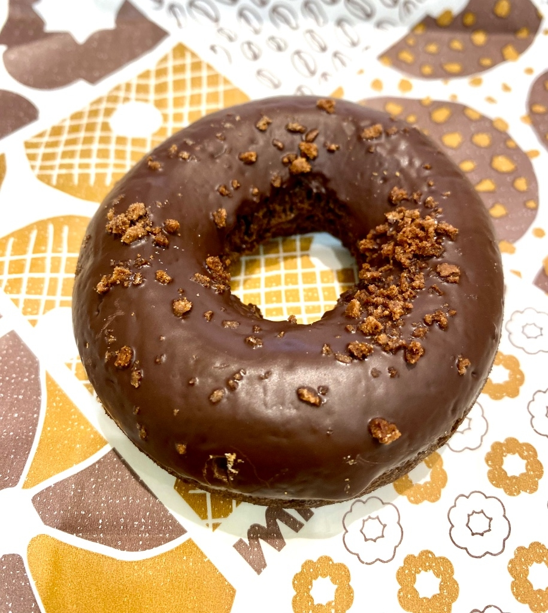

揚げない米粉ドーナツ
デザート,ドーナツ
デザート, ドーナツ

材料
- 卵 … 1個
- 豆乳 or 牛乳 … 30g
- 米粉 … 70〜80g
- はちみつ … 25g
- ベーキングパウダー … 3g
- 糖分(ラカントや純ココア) … 5g
- 高カカオチョコ … 30〜50g
作り方
- 材料をすべてボウルに入れて混ぜる
- 豆乳は最後に入れる15gずつ入れて混ぜると良い
- トロトロになるまでしっかり混ぜる
- ダイソーシリコンドーナツ型に流し、
- (もしくは器に平たく流す、ホットケーキみたいな)
- 500Wで約2分30秒加熱
- 粗熱を取り、型から外す
- 型にチョコを入れ、
- 600Wで約1分30秒加熱して溶かす
- チョコを型内に広げ、ドーナツを型に戻す
- 冷蔵庫で冷やしたら完成
- ※加熱時間は様子を見ながら調整
- (平たいverやと焦げてくるがカリカリでうまいぞおおおお)